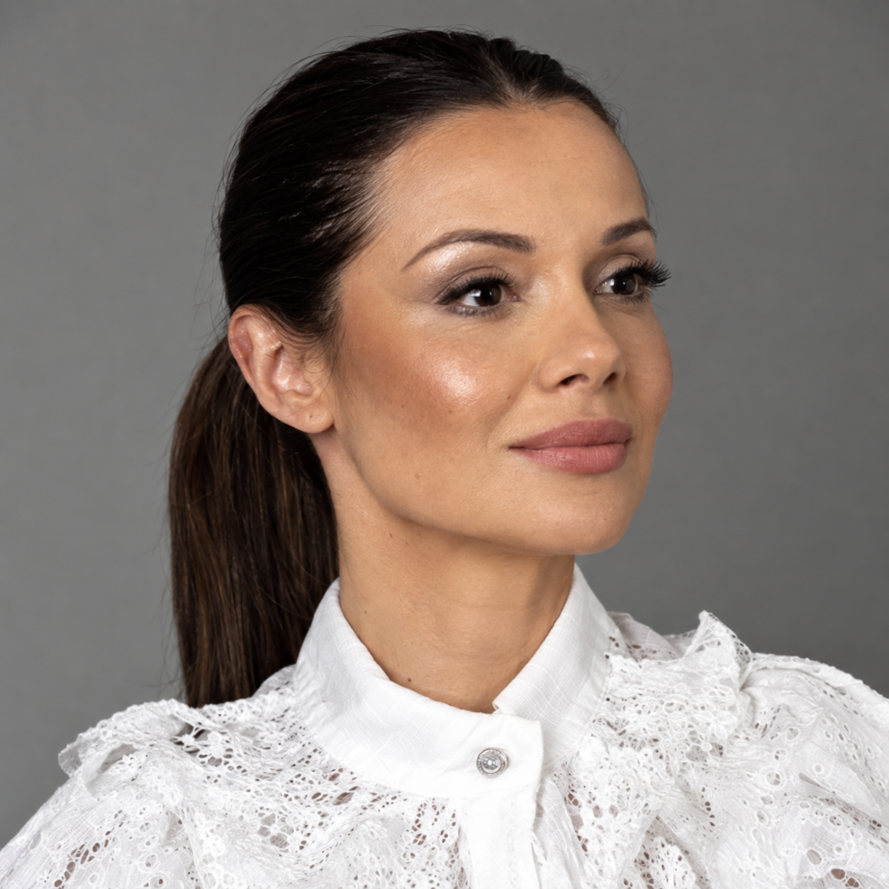
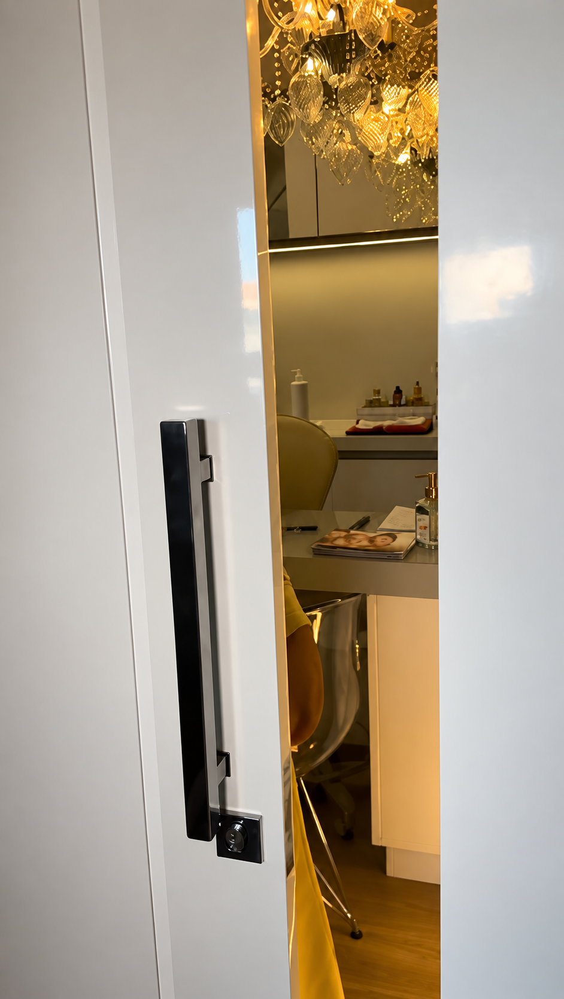

Laser de CO₂
Voltado à renovação e à melhora da aparência da pele. Indicação e cuidados definidos após avaliação.
Laser de CO₂ · Fios de sustentação facial
Procedimentos estéticos avançados personalizados para valorizar seus traços e respeitar a sua individualidade.
Agendar avaliação“Menos exagero.
Mais naturalidade.”

A Dra. Patrícia de Oliveira atua com estética avançada em Capivari de Baixo, com foco em Laser de CO₂ e fios de sustentação facial. Sua proposta é valorizar a individualidade com uma abordagem voltada à naturalidade.
Biografia profissional: formação, registro e trajetória aguardam confirmação para esta seção.

Procedimentos
Voltado à renovação e à melhora da aparência da pele. Indicação e cuidados definidos após avaliação.
A indicação depende de avaliação individual e do planejamento adequado para cada pessoa.
Informações e indicação definidas em consulta, conforme características e objetivos pessoais.
Portfólio completo de atendimentos aguardando confirmação profissional.
Conte o que gostaria de cuidar ou entender.
Receba orientação inicial para organizar seu atendimento.
A indicação é feita individualmente, após avaliação profissional.
Forma de atendimento
Seu próximo passo
Converse com a equipe e descubra qual procedimento pode ser adequado para o seu objetivo.
Falar pelo WhatsApp